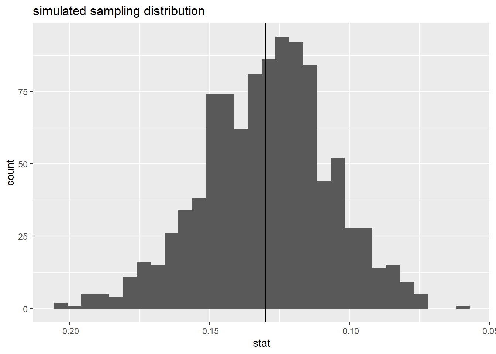

Quantifying uncertanity in the ICU
Modeling Inference
Data Science with R
Getting Started
Programming exercises are designed to provide an opportunity for you to put what you learn in the videos and readings. These exercises feature interactive code cells which allow you to write, edit, and run R code without leaving your browser.
When the ▶️ Run Code button turns to a solid color (with no flashing bubble indicating that the document is still loading), you can interact with the code cells!
Packages
We’ll use the tidyverse and tidymodels for this programming exercise. These are already installed for you to use!
Motivation and data
For several years in the 1990s, Kristen Gilbert worked as a nurse in the intensive care unit (ICU) of the Veterans Administration Hospital in Northampton, Massachusetts. Over the course of her time there, other nurses came to suspect that she was killing patients by injecting them with the heart stimulant epinephrine. Gilbert was eventually arrested and charged with these murders. Part of the evidence presented against Gilbert at her murder trial was a statistical analysis of 1,641 randomly selected eight-hour shifts during the time Gilbert worked in the ICU. For each of these shifts, researchers recorded two variables: whether Gilbert worked on the shift and whether at least one patient died during the shift.
The data set you will be working with is called gilbert. The data are already pre-loaded for you! Simply run the code below to get started. The data key can be seen below.
| Variable | Description |
|---|---|
| outcome | patient died (died) or a patient did not die (no-death) |
| working | Gilbert was working on this shift (gilbert) or Gilbert was not working on this shift (no-gilbert) |
Exploratory data analysis
Before we get into the inference portion of this activity, let’s think about and explore our data.
Thought exercise: What are the observational units? Are our variables categorical or quantitative?
TipSolution
Our observational units are whom or what we take the data off of. In this case, data are collected from individual shifts. Both variables that we are working with are categorial variables.
Now that we know what types of variables we are working with, let’s calculate some summary statistics.
Create a summary table using summarize() and group_by() to display the count for each combination of outcome and working level. What would our sample statistic be?
TipSolution
gilbert |>
group_by(outcome, working) |>
summarize(n = n())`summarise()` has grouped output by 'outcome'. You can override using the
`.groups` argument.# A tibble: 4 × 3
# Groups: outcome [2]
outcome working n
<chr> <chr> <int>
1 died gilbert 40
2 died no-gilbert 34
3 no-death gilbert 217
4 no-death no-gilbert 1350Our sample statistic would be \(\widehat{p_\text{no-gilbert}} - \widehat{p_\text{gilbert}}\) = \(\frac{34}{1384} - \frac{40}{257} = -.13\)
Now, create a proper data visualization to help explore these data. Comment on a patterns you observe with these data. Hint: In the appropriate geom, use position = "fill to create a visualization that is easier to read when we have differing sample sizes. Include appropriate labels. What pattern do you recognize?
TipSolution
ggplot(gilbert, aes(x = working, fill = outcome)) +
geom_bar(position = "fill") +
labs(
title = "Murderous Nurse Data",
y = "Conditional proportion"
)
Based on the visualization, it appears that their were significantly more outcomes of died vs no-death when Gilbert was on shift vs not on the shift.
Hypothesis testing
As stated above, part of the evidence presented against Gilbert at her murder trial was a statistical analysis of 1,641 randomly selected eight-hour shifts during the time Gilbert worked in the ICU. We are going to conduct re-create the hypothesis test presented, via simulation techniques.
Thought exercise: Below, think about what the null and alternative hypothesis would be for this scenario. Think about this both in proper notation, and in words.
TipSolution
Our null hypothesis is:
\(H_0: \pi_\text{no-gilbert} - \pi_\text{gilbert} = 0\)
In words, this is the true proportion of patients who died during shifts where Gilbert was not working is the same as when she was working.
Our alternative hypothesis is:
\(H_a:\pi_\text{no-gilbert} - \pi_\text{gilbert} < 0\)
In words, this is the true proportion of patients who died during shifts where Gilbert was not working is lower than when she was working.
We choose lower (<), because of the order of subtraction, and that we are trying to see if more people died while she was working vs not.
Building the null distribution
Let’s use simulation-based methods to conduct the hypothesis test specified above. We’ll start by generating the null distribution. First, let’s start by explicitly calculating the sample size for each group. These values will be important for simulating our sampling distribution under the assumption of the null hypothesis.
TipSolution
gilbert |>
group_by(working) |>
summarize(count = n())# A tibble: 2 × 2
working count
<chr> <int>
1 gilbert 257
2 no-gilbert 1384The steps to simulate our sampling distribution under the assumption of the null hypothesis are as follows:
Permute or shuffle all observations together, regardless their value of work (grouping variable)
Randomly distribute observations into two new groups of size n1 = 257 and n2 = 1384
Summarize the data for each group
Subtract
… and we do the entire process above many many times.
Thought exercise: Why are we shuffling all observations together?
Why do we randomly distribute back into new groups of the same size as our original data?
TipSolution
Hypothesis tests are conducted under the assumption of the null hypothesis. Our null hypothesis is that the groups “don’t matter”. To simulate data under this assumption from our observed data, we remove the group label, and permute observations back out into two new groups, regardless of their group label from the original data.
We distribute these observations back into groups of the same size as before, because we want our sampling distribution to be comparable to our original statistic. The goal of hypothesis testing is to see how unlikely our statistic is, under the assumption of the null hypothesis. It’s not a fair comparison to our original statistic if the sample sizes for each group are different.
Now, let’s use R to simulate the process discussed above. Save your permutated values as the object null_dist. We plot this object later.
CautionHint
null_dist <- gilbert |>
specify(response = ____, explanatory = ____, success = "___") |> # specify variables
hypothesize(null = "independence") |> # hypothesis test for independence
generate(reps = ____, type = "permute") |> # use permutation with appropriate number of reps
calculate(stat = "_____", order = c("_____", "_____")) # specify statistic and order of subtraction
TipSolution
set.seed(12345)
null_dist <- gilbert |>
specify(response = outcome, explanatory = working, success = "died") |> # specify variables
hypothesize(null = "independence") |> # hypothesis test for independence
generate(reps = 1000, type = "permute") |> # use permutation with appropriate number of reps
calculate(stat = "diff in props", order = c("no-gilbert", "gilbert")) # specify statistic and order of subtraction
null_distResponse: outcome (factor)
Explanatory: working (factor)
Null Hypothesis: ind...
# A tibble: 1,000 × 2
replicate stat
<int> <dbl>
1 1 -0.00189
2 2 0.00272
3 3 -0.0111
4 4 0.0119
5 5 0.00733
6 6 0.0166
7 7 0.0166
8 8 -0.00189
9 9 -0.00189
10 10 0.0258
# ℹ 990 more rowsYou have now created 1000 simulated difference in proportions under the assumption of \(H_0: \pi_\text{no-gilbert} - \pi_\text{gilbert} = 0\).
Let’s now plot your simulated difference in proportions, and calculate our p-value! To do so, we are going to use the following code:
visualize(_____) +
shade_p_value(____, direction = "____")The first argument in the visualize() function is your R object of simulated proportions. This is why we saved these proportions as null_dist. The first argument in the shade_p-value() function is our statistic. The original statistic we calculated (-.13). Lastly, we need to specify the direction we shade from our statistic. This function will take the arguments “less”, “left”, “greater”, “right”, “two-sided”, “both”, “two_sided”, “two sided”, or “two.sided”.
A p-value, in this context, is the probability of observing -.13, or something even lower, given \(H_0: \pi_\text{no-gilbert} - \pi_\text{gilbert} = 0\). Lower comes from our alternative hypothesis sign (i.e., our research question). Use this information to plot our our simulated sampling distribution and shade the appropriate area for our p-value below.
What do we notice? Is our p-value large or small?
TipSolution
visualize(null_dist) +
shade_p_value(-0.13, direction = "less")We notice that, out of 1000 samples generated under the assumption of the null hypothesis, we observed 0 samples as small, or even smaller than -0.13. This would indicate that our p-value is very very small.
Based on our simulated hypothesis test, we calculated an extremely small p-value. What does this mean for our null and alternative hypothesis? What can we conclude. Assume you are comparing your p-value vs a significance level of \(\alpha = 0.05\)
TipSolution
With an extremely small p-value, at a 5% significance level, we would reject the null hypothesis, and have strong evidence to conclude that the true proportion of patient outcomes that resulted in no death were lower when Gilbert was not working vs when she was working.
Thought exercise: How would we define \(\alpha\) in this context?
TipSolution
\(\alpha\) is a threshold we use against our p-value to see if we have enough evidence to reject the null hypothesis. It is also the probability of committing a Type I error. In this context, we have a 5% chance of rejecting the null hypothesis when the null hypothesis was actually true.
Confidence intervals
Now, we are going to estimate \(\pi_\text{no-gilbert} - \pi_\text{gilbert}\). We can do this by conducting a confidence interval! Again, we will use simulation techniques. Let’s go through the steps below.
As a reminder, we no longer have a hypothesis to assume true. Our whole goal is to estimate \(pi_\text{no-gilbert} - \pi_\text{gilbert}\). At their core, confidence intervals are our “best guess” of what \(pi_\text{no-gilbert} - \pi_\text{gilbert}\) might be, accompanied by a range of values created through quantifying uncertainty around our “best guess”. Our best guess is the sample statistic calculated from above: \(\widehat{p_\text{no-gilbert}} - \widehat{p_\text{gilbert}}\) = \(\frac{217}{1567} - \frac{40}{74} = -.13\). Let’s now go through the steps to quantify our uncertainty (build up a sampling distribution).
Randomly sample within each group n1 = 257 and n2 = 1384 times, respectively.
Summarize the data for each group
Subtract
… and we do the entire process above many many times.
This process is called bootstrap resampling.
Thought exercise: Why did we not shuffle the groups together, and instead randomly sample from each group?
Why do we make sure to randomly sample from each group equal to the sample size as our original groups?
TipSolution
We want our sampling distribution to be centered at our “best guess” of \(pi_\text{no-gilbert} - \pi_\text{gilbert}\), which is our statistic calculated to be -.13. To ensure this, we need to keep the integrity of our groups. This includes keeping the sample sizes the same for each group.
Now, let’s use R to simulate the process discussed above. Save your permutated values as the object boot_dist. We plot this object later.
CautionHint
boot_dist <- gilbert |>
specify(response = ____, explanatory = ____, success = "___") |> # specify your variables here, and what you are taking the proportion of) |> # specify your variables here
generate(reps = ____, type = "bootstrap") |> # this says we are going to use bootstrap techniques. Put an appropriate number of reps in
calculate(stat = "_____", order = c("_____", "_____")) # specify our statistic and the order of subtraction here
TipSolution
boot_dist <- gilbert |>
specify(response = outcome, explanatory = working, success = "died") |> # specify your variables here, and what you are taking the proportion of) |> # specify your variables here
generate(reps = 1000, type = "bootstrap") |> # this says we are going to use bootstrap techniques. Put an appropriate number of reps in
calculate(stat = "diff in props", order = c("no-gilbert", "gilbert")) # specify our statistic and the order of subtraction hereNow, let’s plot our simulated difference in sample proportions below using geom_histogram(). Add a vertical line at your statistic using geom_vline() to help visualize that the distribution is centered at our statistic.
TipSolution
boot_dist |>
ggplot(
aes(x = stat)
) +
geom_histogram() +
geom_vline(xintercept = -.13) +
labs(title = "simulated sampling distribution")`stat_bin()` using `bins = 30`. Pick better value with `binwidth`.
We can see that our simulated sampling distribution is centered right at -.13, our sample statistic.
Now, we can use our R object boot_dist to calculate different levels of confidence intervals. Recall that, if we want to create a 95% confidence interval, we need to find a lower and upper bound that captures 95% of all simulated difference in proportions. We can do that using the quantile() function within summarize(). A quantile is a value where a certain percentage of data falls to the left of the specified value. This means:
If we want to create a 95% confidence interval, we need to calculate the quantile that excludes 2.5% on the left tail, and the right tail.
If we want to create a 90% confidence interval, we need to calculate the quantile that excludes 5% on the left tail, and the right tail.
etc. etc.
Take a look at the following demo code:
boot_dist |>
summarize(
lower = quantile(stat, ____),
upper = quantile(stat, ____)
)boot_dist is our R object. We use summarize() to calculate summary statistics from our boot_dist object. The column name stat in our boot_dist
Edit the following code above the calculate an appropriate 95% confidence interval. Then, think about how this confidence interval should be interpreted.
TipSolution
# A tibble: 1 × 2
lower upper
<dbl> <dbl>
1 -0.177 -0.0856We are 95% confident that the true proportion of deaths when Gilbert was not on shift is 0.0850 to 0.180 LOWER than when she was on shift.
Note: Be mindful of order of subtraction.
What happens when the confidence level changes? Look at your distribution, and think critically about what happens to your confidence interval when we go from a 95% confidence interval to an 80% confidence interval. Does the center change? Does the spread change? Use the code chunk below to calculate an 80% confidence interval to check your understanding.
TipSolution
# A tibble: 1 × 2
lower upper
<dbl> <dbl>
1 -0.159 -0.102Our confidence interval will ALWAYS be centered at our sample statistic. The center of our distribution does not change. However, as our confidence level decreases, so does the width (as ween from the above code).
Summary
We can use randomization and bootstrap techniques for statistical inference.
When we want to test a population parameter vs a given value, we should think about conducting a hypothesis test.
When we want to estimate a population parameter, we should think about creating a confidence interval.
Depending on the methodolgy, the simulation process will be different, dictating where our sampling distribution is centered.